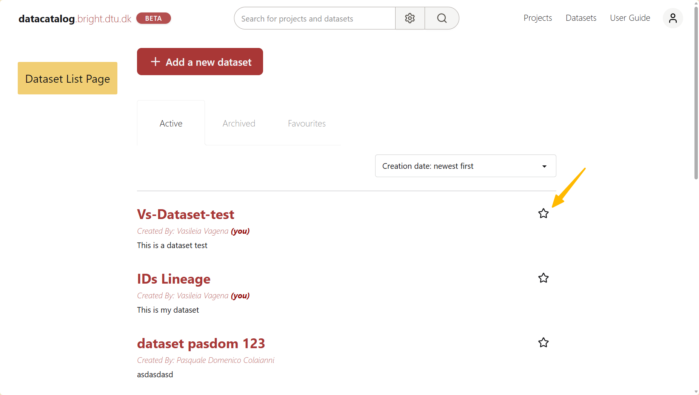

Search & Favourites¶
Data Catalog makes it easy to find projects and datasets quickly using keywords, filters and favourites. This guide explains the available search options and how to use favourites.
➤ Basic Search¶
At the top of the page, you will find the Search bar. Simply type any relevant keyword such as the project or dataset name, and Data Catalog will display matching results.
→ The search looks for your keyword in the name and description of projects and datasets. Partial words also work, but typos are not corrected, so check the spelling if you don’t find what you are looking for.
➤ Advanced Search¶
For more precise results, you can use the Advanced search. It helps you narrow down your results by applying filters, making it easier to find what you are looking for. To open it, click the gear button next to the search bar, set your filters and click Apply & Search.
Available filters include:
Archive Status: Choose from Active only (default), Archived only or All
Entity Type: Select whether you want Projects & Datasets, Projects only or Datasets only
Project or Dataset filters: Appear when you choose Projects only or Datasets only in Entity Type:
Projects: Principal Investigator (PI), LIMS (Benchling) project
Datasets: Data type, Resource type, Instrument, Data acquisition method, Data acquisition facility
Entity Name: You can type the full name or just part of it
Created by: Filter by the full name of the person who created the project or dataset
Description: Search only in the description
Access rights: Choose from All, Restricted or BRIGHT-visible
Tip
To make your search more precise, try combining multiple filters at once.
Search
Favourites¶
The Favourite feature allows you to mark frequently used projects and datasets for quick access. Favourite items appear under the Favourites tab, next to the Active and Archived tabs, on the Projects and Datasets list pages.
Adding and removing favourites¶
Navigate to the Projects or Datasets list page
Click the icon next to its name to mark it as a favourite
To remove a favourite, click the star icon again
The screenshots below show how to mark a dataset as favourite. The same applies to projects.

The star icon on the dataset list page
API Availability¶
The search can also be performed programmatically. For more details, see the following endpoint in the API Reference: